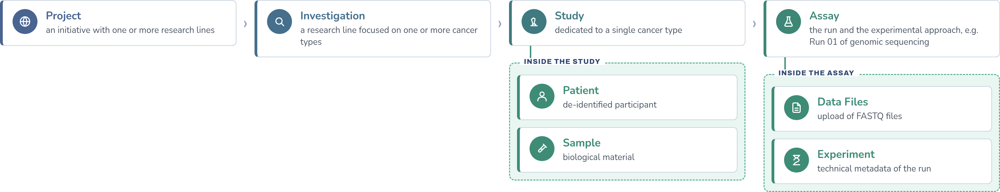

In Data submission, we saw the order in which information is registered. The data model explains why this order exists: it defines how information is organized and related on the platform, ensuring traceability, interoperability and consistency throughout the entire data life cycle.
Overview#
ATPBR uses a hierarchical structure made up of four main modules:
Project → Investigation → Study → Assay
This organization connects the scientific context of the research to the patients, the biological samples, the experimental procedures and the data files generated.
The Study and Assay modules also contain specific elements:
- Study: Patients and Samples.
- Assay: Experiments and Data Files.
#
Main Modules#
Project#
Represents the overall scientific context of the research and is the highest level of the hierarchy. It brings together one or more related research lines and defines the scientific objectives, the scope and the participating institutions.
Investigation#
Represents a research line within a Project. It groups studies related by a theme, scientific objective or hypothesis, and may cover different cancer types.
Study#
Represents a scientific unit dedicated to characterizing a single cancer type within an Investigation. It defines the study design, the cohorts, the selection criteria and the clinical characteristics of the participants.
It contains two elements:
- Patients: study participants, each with a single record on the platform, regardless of the number of associated samples.
- Samples: biological materials collected from the patients. A patient may be associated with several samples.
Assay#
Represents an experimental run used to generate omics data from the samples of a Study. Distinct runs, even when they use the same omics approach, must be registered as separate Assays. A Study may contain several Assays.
It contains two elements:
- Data Files: raw files produced in the experimental run, such as FASTQ (see Data types), used as input for processing on the platform.
- Experiments: records of the technical metadata associated with each sample processed in the run, including sequencing platform, library preparation and read layout. Each Experiment links a Sample to its Data Files.
How the Elements Relate#

The figure shows the hierarchy of the modules and the relationships between their elements.
Besides belonging to a module, certain elements depend on previously registered records:
- A Sample must be associated with a Patient.
- An Experiment must be associated with a Sample and with the corresponding Data Files available in the Assay.
These dependencies determine the order of registration on the platform and make it possible to trace experimental data back to the sample and patient of origin.
The fields of each module and element are described in the next chapter. Some of them also make up the unique identifier of patients, samples and assays, presented in Identification and barcode system.
Next chapter → Data dictionary: the fields of each module and element and the rules for filling them in.